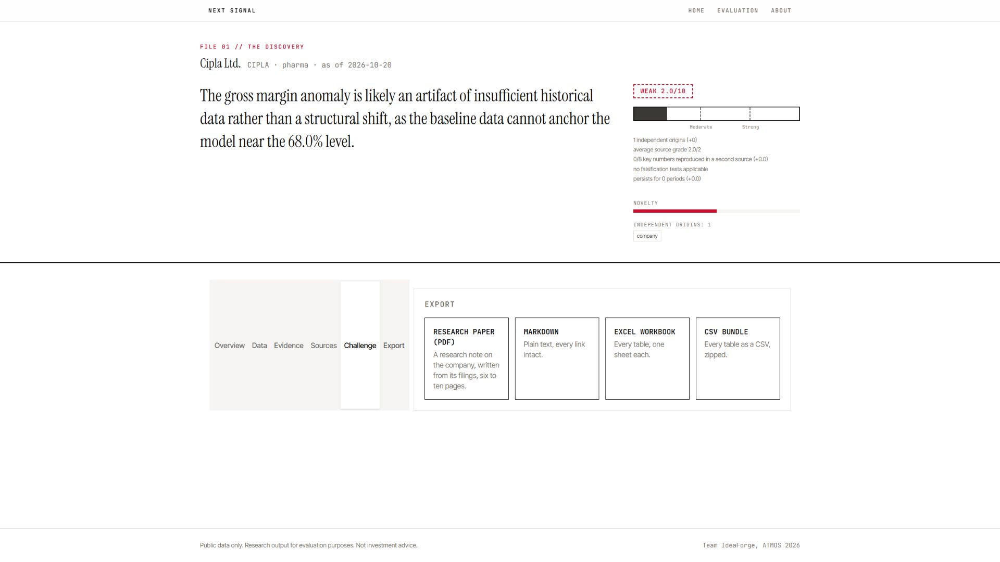
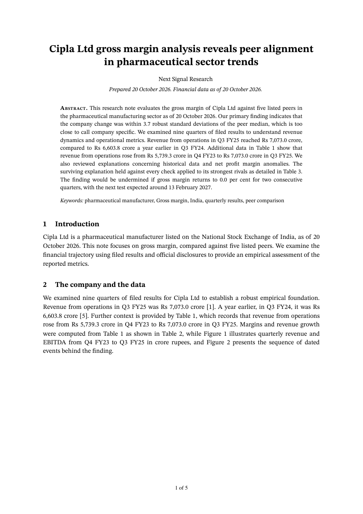

<template>
 <style>#S07_root{position:relative;width:100%;height:100%;overflow:hidden;background:#F6F5F3}#S07_root img{position:absolute;left:0;top:0;width:1920px;height:1080px;object-fit:contain;background:#F6F5F3}</style>
 <div data-hf-id="hf-8vke" id="S07_root" data-composition-id="S07" data-width="1920" data-height="1080">
 


 
 </div>
 <script>(()=>{const tl=gsap.timeline({paused:true});tl.to({},{duration:13.2},0);window.__timelines["S07"]=tl;})();</script>
</template>
